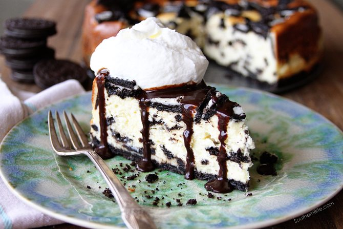

This is a silky smooth cheesecake topped sky-high with gorgeous red plump cherries. If you are looking for a showstopping dessert – this is it!.Nothing beats a decadent cherry cheesecake. There is just something classic and special about it.This particular cheesecake recipe is exceptionally smooth and creamy because it’s made mostly with sour cream instead of cream cheese, which makes it unique. It’s also topped with a homemade cherry sauce, instead of canned, which is so much tastier and more satisfying.
An easy No-Bake Oreo Cheesecake with an Oreo crust. This simple no-bake cheesecake makes a perfect dessert for any time of year!
